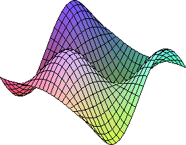
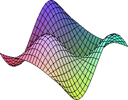

FD: Finite Difference Toolkit in Maple

FD: Finite Difference Toolkit in Maple
Tutorials
1 Heat Equation (fixed boundary, explicit FDA scheme)
We start with directly diving into a simple example of solving a PDE using FD. Consider the heat equation: $$ \partial_t f(t,x) - \partial_x^2 f(t,x) = 0 $$ and the following form for the finite differencing approximation to this equation: $$ \frac{f^{n+1}_i-f^{n}_i}{h_t} - \frac{f^n_{i-1}-2f^n_{i}+f^n_{i-1}}{h_x^2} = 0 $$ in which \(f^n_i\) denotes discretized value of the function \(f(t^n,x_i)\) at time step \(t^n = nh_t\) and spatial position \( x_i = x_{\mathrm min} + i h_x \). Note that this FDA is first order in time and second order in spatial domain. This equation requires two boundary conditions, which we denote by \(T_0\) and \( T_1 \) (the temperatures at the two end of the domain). Suppose that we aim to solve this problem in the domain \(x\in(x_{\mathrm min},x_{\mathrm max}) \).
Here is the FD Maple code that generates the solver FORTRAN routine and the residual evaluators:
read "../../FD.mpl": Clean_FD(); Make_FD(); grid_functions := {f}; FD_table[t] := [[0],[0,1]]; HeatEq := diff(f(t,x),t) - diff(f(t,x),x,x); init_f:= T0 + (T1-T0)*((x-xmin)/(xmax-xmin))^2; Gen_Eval_Code(init_f,input="c",proc_name="init_f"); HeatDDS := [ { i=[1,1,1] } = f(n+1,i) - T0 + myzero*x(i) , { i=[2,Nx-1,1] } = Gen_Sten(HeatEq) , { i=[Nx,Nx,1] } = f(n+1,i) - T1 +myzero*x(i) ]; A_Gen_Solve_Code(HeatDDS,{f(n+1,i)},input="d",proc_name="update_f");
Now we continue with describing the different elements of this code.
1.1 Set-up
This example illustrates some of the most important features of FD and its syntax. First, the commands:
Clean_FD(); Make_FD();
sets up some internal variables and creates the default finite differencing table. The second assignment:
grid_functions:={f};
defines f as a grid function, thus FD will attempt to discretize it accordingly.
Anything not defined in the grid function set will be considered as a parameter
or a known/given continuum function, i. e. \( g(x,y) \) \( (g \notin {\mathrm GFS} ) \)
will be discretized as \( g(x(i),y(j)) \) and FD will assume that the user
will provide the function.
1.2 Changing the Finite Differencing Scheme
By default, FD uses centered second order finite difference scheme. Since here we are using a forward FDA for time derivative the second line is to update the FD_table content to forward in time:
FD_table[t] := [ [0] , [0,1] ];
The variable t is the built-in independent variable "time" which
is used for time evolution problems. The first element [0]
enforces FD to use the current time position for the discrete version of the
function, i. e. \( f(t,x) \) must be discretized as \(f(n,i)\).
The second element [0,1]] is to tell FD to use current and advance time
level to discretize the first time derivative which is exactly what we need.
Note that we have not provided elements for higher derivatives, thus FD
would not be able to compute them. Here is another example to update the FD table
to forward in time upto second derivative
FD_table[t] := [ [0] , [0,1,2] , [-1,0,1] ];
Here FD will use 3 point forward in time ( \( f^n_i , f^{n+1}_i , f^{n+2}_i \) ) for first time derivative and centered scheme ( \( f^{n-1}_i , f^{n}_i , f^{n+1}_i \) ) for the second time derivative of functions. A similar syntax can be used to specify how to discretize the derivatives in x, y and z direction.
Note that here we are changing the content of FD_table by specifying which points FD should use for which derivative. This is usually not the safe way to use FD, since the user should be careful about the accuracy of the FDA expressions and the fact that higher derivatives require more number of points. A better way, as it will be discussed later, is to specify the order of accuracy and the limitation on the points available (this matters at the points close to the boundary). In this method, FD will update the FD_table accordingly to achieve the desired accuracy.
1.3 Generating the Evaluator Code for the Initial Time Data
Next command is to create an evaluator FORTRAN routine that evaluates a function over a discretized domain. This kind of operation is used to initialize the grid functions.
Gen_Eval_Code(VDE/VCE,input="c/d",proc_name="somename");
The first argument is either a valid discrete expression (VDE)
or a valid continuous expression (VCE). See the manual for the
elaborated definition of this types. In a nutshell, a VCE is simply
a function of fundamental independent variables \( (t,x,y,z) \)
in the continuous form such as f(t,x)+sin(x)+cos(xy^2)+...
and VDE is a function appropriately indexed by numerical
grid points such as: f(n,i)+sin(x(i))+g(i,j)+...
VDEs are usually considered to be generated using FD package,
and if human generated, FD parses the expression, to insure
that it is indeed a valid discrete expression.
The second argument is to tell the routine if the expression
that is being passed in is a discrete version (input="d")
or is a continuous version (input="c"). Finally the
third argument specifies the name of the FORTRAN routine that
needs to be generated. (without the suffix .f)
This execution generates 3 files:
init_f.h init_f.f init_f_call
where init_f.h is the include C file to call the function from a C driver.
init_f.f is the FORTRAN routine, and init_f_call is a typical call C expression
that can be copy/pasted to the C driver routine. Note that all of the _call
expressions generated by FD has res as their last argument. This needs to be
modified manually by the user to the desired name(pointer). For example in the heat
problem the initialization is supposed to initialize the current time level ( \( f^n_i \) ).
Therefore, res should be replaced with n_f which is the default name FD uses
to denote the vector storing the current values of the function in the numerical domain.
1.4 Creating the Solver FORTRAN Code
The next step is to specify a FDA expression that needs to be solved in advanced time in the process of numerically solving the PDE. Furthermore, such a specification needs to be done differently for different points of the discrete domain. FD uses a specific syntax, similar to RNPL, to do so. Let's take a look at the discrete domain specifier (DDS) in this tutorial:
HeatDDS := [
{ i=[1,1,1] } = f(n+1,i) - T0 + myzero*x(i) ,
{ i=[2,Nx-1,1] } = Gen_Sten(HeatEq) ,
{ i=[Nx,Nx,1] } = f(n+1,i) - T1 +myzero*x(i)
];
The left hand side of the equations are sets of (upto 3 dimension) indexed equation such as:
{ i = [1,1,1] , j=[2,Ny,2] , k=... }
where it specifies which part of discrete domain the right hand side should be used for.
One can think of each index equation such as i=[1,Nx-3,2] as a FORTRAN
for loop. For instance:
$$ i=[1,Nx-3,2] \longrightarrow \mathrm{do} \; i=1, \; Nx-3, \; 2 $$
is a for loop with stepping 2 and in inclusive interval (1,Nx-3).
The right hand side can be a discrete or continuous valid expression which
involves the variable for which FDA is going to be solved. Here the unknown variable is the advanced time
f(n+1,i). Note that FD checks for consistency of LHS and RHS and all of the
elements of a given DDS to ensure they have the same indexing and dimensionality.
The existence of myzero*x(i) is necessary to ensure that the RHS
contains at least one VDE after being converted to a solver expression.
This is due to the fact that FD is using VDE/VCE as its data type, and a constant term
such as T0 is not a valid discrete or continuous expression.
Finally, the solver code is generated via:
A_Gen_Solve_Code(HeatDDS,{f(n+1,i)},input="d",proc_name="update_f");
which takes a VDE/VCE, a set of unknown for which it will solve the VDE/VCE for, the type of input, and the desired FORTRAN function name.
Similar to Gen_Res_Code, this call creates 3 files: update_f.f, update_f.h and update_f_call.
1.5 C Driver Code Structure:
Final step to solve this PDE is to write a driver routine, in C such a driver would have the following pseudo-code structure:
- Initialize memory for 2 time level for function f, namely:
n_f,np1_f - Call initializer function
init_fto set up the initial time profile - start taking a time step:
- do 1 iteration of solver routine
update_f - if using an explicit scheme one iteration of solver will find the solution at advanced time level, otherwise an iterative method is needed(see the wave example)
- do 1 iteration of solver routine
- output the new time level n+1 and continue to take the next time step
Note that FD uses n_f name for the current time level, and np1_f, np2_f ...
for the advanced times, and nm1_f, nm2_f ... for the retarded time levels.
Therefore it is easier to use similar names for the vectors in the C code.
(See the code below)
The core part of the C driver looks like this:
/* Read parameters T0 T1 etc... */
/* Initialize numerical grid x */
/* Initialize memory for two time level of function f: n_f(1..Nx), np1_f(1..Nx) */
init_f_(x,&Nx,&T0,&T1,&xmax,&xmin,n_f);
for (i=0; i<time_steps; i++) {
norm_f = l2norm(Nx,n_f);
update_f_(n_f,np1_f,x,&Nx,&T0,&T1,&ht,&hx,&myzero,phys_bdy,np1_f);
residual_f_(n_f,np1_f,x,&Nx,&T0,&T1,&ht,&hx,&myzero,phys_bdy,&tres);
tol = tres/norm_f;
time = time + ht;
/* Output data as needed */
printf("step: %d time : %f res: %1.14e\n",i+1,time,tol);
/* Initialize n_f with the new np1_f for the next time step */
}
Here is the full c driver code that uses BBHUTIL libraries for I/O facilities.
The files of this tutorial are all located in FD/tutorials/heat. Here
is a demonstration of the temperature profile being evolved using the
code and XVS visualization tool.
Time evolution of the temperature, the solution obviously converges to the equilibrium temperature profile which is a linear function between the boundaries.
2 Wave Equation (periodic boundary, implicit FDA scheme)
Now let's focus on solving a 1-D wave equation using the implicit Crank-Nicolson scheme. This example introduces more features of FD, including manual FDA expression and imposing periodic boundary condition.
First, we convert the wave equation:
$$ \partial^2_t f(t,x) = \partial^2_x f(t,x) $$
to first order in time by defining:
$$ g(t,x) \doteq \partial_t f(t,x) $$
then the wave equation is:
and we want to implement the following FDA equations:
$$ \frac{f^{n+1}_i-f^{n}_i}{h_t} = \left( g^{n+1}_i + g^{n}_i \right) / 2 $$
First, here is the FD code that solves the wave equation and also generates an independent residual evaluator (IRE) code
for checking the solution (in the code f_t denotes the g defined in the equations):
read "/d/bh8/home/arman/FD/FD.mpl":Clean_FD();Make_FD(); grid_functions := {f,f_t}; eq1 := diff(f(t,x),t) = f_t(t,x); eq2 := diff(f_t(t,x),t) = diff(f(t,x),x,x); eq3 := diff(f(t,x),t,t) = diff(f(t,x),x,x); Gen_Res_Code(lhs(eq3)-rhs(eq3),input="c",proc_name="ire_f"); FD_table[t] := [[0],[0,1]]; AVGT := a -> ( FD( a,[ [1],[0] ]) + FD( a,[ [0],[0] ]) )/2; eq1_D:= Gen_Sten(lhs(eq1)) - AVGT(Gen_Sten(rhs(eq1))); eq2_D:= Gen_Sten(lhs(eq2)) - AVGT(Gen_Sten(rhs(eq2))); s_f:= [ { i=[1,1,1] } = FD_Periodic(eq1_D,{i=1}) , { i=[2,Nx-1,1] } = eq1_D, { i=[Nx,Nx,1] } = FD_Periodic(eq1_D,{i=Nx}) ]; s_f_t:= [ { i=[1,1,1] } = FD_Periodic(eq2_D,{i=1}), { i=[2,Nx-1,1] } = eq2_D, { i=[Nx,Nx,1] } = FD_Periodic(eq2_D,{i=Nx}) ]; A_Gen_Solve_Code(s_f,{f(n+1,i)},input="d",proc_name="u_f",is_periodic=true); A_Gen_Solve_Code(s_f_t,{f_t(n+1,i)},input="d",proc_name="u_f_t",is_periodic=true); A_Gen_Res_Code(s_f,input="d",proc_name="res_f",is_periodic=true); A_Gen_Res_Code(s_f_t,input="d",proc_name="res_f_t",is_periodic=true); init_f:=A*exp(-(x-x0)^2/delx^2); init_f_t:=idsignum*diff(init_f,x); Gen_Eval_Code(init_f,input="c",proc_name="init_f"); Gen_Eval_Code(init_f_t,input="c",proc_name="init_f_t");
2.1 Independent Residual Evaluator (IRE)
First note that the equations eq1 and eq2 define the wave equation in a first order form, while eq3 defines
the wave equation in a second order form.
In the beginning of the code, we first create a residual evaluator which computes the residual of the wave equation:
eq3 := diff(f(t,x),t,t) = diff(f(t,x),x,x);
Gen_Res_Code(lhs(eq3)-rhs(eq3),input="c",proc_name="ire_f");
This is for testing purposes. Since FD uses second order FDA, this residual should converge by factor of 4, if the resolution is improved by a factor of 2. The driver C code in the following prints out this residual for monitoring. Note that since second time derivative requires 3 time level, the driver code should keep 3 time level during the evolution.
2.2 Writing a Manual FDA Operator
Next step is to create the time averaging operator we need in the Crank-Nicolson scheme. This is provided
by defining the AVGT maple operator which in turn uses one of the fundamental operators in FD, named FD!
AVGT := a -> ( FD( a,[ [1],[0] ]) + FD( a,[ [0],[0] ]) )/2;
The syntax of FD is as following:
FD( VDE , [ [shift_t] , [shift_x,shift_y,shift_z] ] )
FD takes a VDE(Valid Discrete Expression) and returns the shifted version of it. As you can easily see, this operator can provide a manual way to generate any FDA expression. However, FD is not designed to be used extensively by the user, rather it is for imposing a non-trivial FDA expressions such as implicit schemes or the ones occur at the boundary points. See the manual of FD for detailed description of this function.
Next is to create the desired FDA expressions that defines the wave equation. This is done via: FD_table[t] := [[0],[0,1]];
eq1_D:= Gen_Sten(lhs(eq1)) - AVGT(Gen_Sten(rhs(eq1)));
eq2_D:= Gen_Sten(lhs(eq2)) - AVGT(Gen_Sten(rhs(eq2)));
Note that we change FD_table in the first line to enforce using forward in time derivatives for the first time derivatives occurring in the equation.
The user can look at the content of eq1_D and eq2_D which are the VDE version of the wave equation.
Here is a snapshot of the maple session:
> eq1_D;
-f(n, i) + f(n + 1, i)
---------------------- - 1/2 f_t(n + 1, i) - 1/2 f_t(n, i)
ht
> eq2_D;
f_t(n, i) - f_t(n + 1, i) f(n + 1, i - 1) - 2 f(n + 1, i) + f(n + 1, i + 1)
- ------------------------- - 1/2 -------------------------------------------------
ht 2
hx
f(n, i - 1) - 2 f(n, i) + f(n, i + 1)
- 1/2 -------------------------------------
2
hx
>
2.3 Making an FDA Periodic
The next step is to write the Discrete Domain Specifiers (DSS) for the two equations:
s_f:= [
{ i=[1,1,1] } = FD_Periodic(eq1_D,{i=1}) ,
{ i=[2,Nx-1,1] } = eq1_D,
{ i=[Nx,Nx,1] } = FD_Periodic(eq1_D,{i=Nx})
];
s_f_t:= [
{ i=[1,1,1] } = FD_Periodic(eq2_D,{i=1}),
{ i=[2,Nx-1,1] } = eq2_D,
{ i=[Nx,Nx,1] } = FD_Periodic(eq2_D,{i=Nx})
];
Note that here at i=1 and i=Nx we convert the eq1/2_D to their periodic version. This is done via FD_Period function.
The syntax of this function should be clear from the example. Any index i smaller than 1 at the point i=1 will be mapped to i+(Nx-1)
and any index higher than Nx at {i=Nx} will be mapped to i-(Nx-1). Here is a screen-shot of the maple session.
> FD_Periodic(eq2_D,{i=1});
f_t(n, i) - f_t(n + 1, i) f(n + 1, i - 2 + Nx) - 2 f(n + 1, i) + f(n + 1, i + 1)
- ------------------------- - 1/2 ------------------------------------------------------
ht 2
hx
f(n, i - 2 + Nx) - 2 f(n, i) + f(n, i + 1)
- 1/2 ------------------------------------------
2
hx
>
Note how i-1 index is converted to i - 2 + Nx, which maps the point on the left of the left boundary to the point
right to the right boundary. Of course point i=1 is mapped to i=Nx.
2.4 Typical Driver for an Implicit Scheme
Finally, the last part of the code generates the FORTRAN routines to do 1 step Newton-Gauss-Sidel relaxation operation to solve the wave equations:
A_Gen_Solve_Code(s_f,{f(n+1,i)},input="d",proc_name="u_f",is_periodic=true);
A_Gen_Solve_Code(s_f_t,{f_t(n+1,i)},input="d",proc_name="u_f_t",is_periodic=true);
A_Gen_Res_Code(s_f,input="d",proc_name="res_f",is_periodic=true);
A_Gen_Res_Code(s_f_t,input="d",proc_name="res_f_t",is_periodic=true);
Note that here we also need the residual evaluator routines to check see if the residual is below a certain threshold.
A residual evaluator code is generated using A_Gen_Res_Code function.
Also note that the is_periodic flag is turned on, since the VDE that is being passed into the routines is converted
to a periodic form, otherwise the routines complain that the discrete expression is not valid.
Finally, the initializer routines are required at the initial time:
init_f:=A*exp(-(x-x0)^2/delx^2);
init_f_t:=idsignum*diff(init_f,x);
Gen_Eval_Code(init_f,input="c",proc_name="init_f");
Gen_Eval_Code(init_f_t,input="c",proc_name="init_f_t");
Here is a pseudo-code for a C driver code to use these routines:
- Initialize memory for 2 time level for function f, namely:
n_f,np1_f - Call initializer function
init_fto set up the initial time profile - start taking a time step:
- do 1 iteration of solver routine
update_fandupdate_f_t - compute the residual using
res_fandres_f_tto see if iteration is sufficient. - if residual is not below the desired threshold, goto 1.
- do 1 iteration of solver routine
- output the new time level n+1 and continue to take the next time step
the core part of the C code looks like this:
/* initialize the problem */
for (i=0; i<steps; i++) {
j=0;
tot_res = 1.0;
while (tot_res > 1.0e-9) {
u_f_(n_f,n_f_t,np1_f,np1_f_t,&Nx,&ht,phys_bdy,np1_f);
u_f_t_(n_f,n_f_t,np1_f,np1_f_t,&Nx,&ht,&hx,phys_bdy,np1_f_t);
res_f_(n_f,n_f_t,np1_f,np1_f_t,&Nx,&ht,phys_bdy,&res_f);
res_f_t_(n_f,n_f_t,np1_f,np1_f_t,&Nx,&ht,&hx,phys_bdy,&res_f_t);
tot_res=res_f/l2norm(Nx,np1_f) + res_f_t/l2norm(Nx,np1_f_t);
j++;
}
/* output data */
/* compute other diagnostic functions */
/* swap n and np1 time levels */
}
See the [C code ]. This tutorial can be found in FD/tutorials/wave1d_periodic folder.
Here is a visualization of the solution solved using these routines:
Time evolution of the wave in a periodic boundary condition.